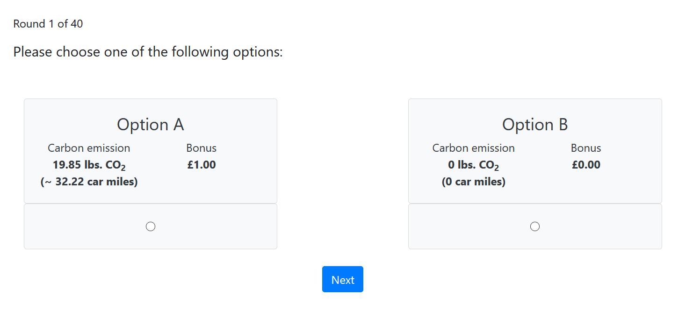

Pages¶
Overview of all pages of the Carbon Emission Task
Note
Timeouts: There is a timeout on every page of the experiment to account for dropped out players. In case a player begins the experiment and leaves, the player is automatically progressed through the rest of the experiment.
Instruction Page¶
The following instructions are presented to the player:

Timeout¶
There is a Timeout of 120 seconds on this page.
Practice Pages¶

There is a total of three practice pages before the actual CET starts. The practice pages don’t visibly differ from
the actual experiment pages and serve the sole purpose of familiarising the participants with the task.
The following carbon, car_miles, bonus values are used in this order for the three practice pages:
0.23 lbs. CO2, 0.37 car miles, 0.2£
4.46 lbs. CO2, 7.24 car miles, 0.6£
19.85 lbs. CO2, 32.22 car miles, 1£
These values can be changed in the following code block of the corresponding practice page class:
def vars_for_template(self):
return dict(
practice1_carbon=0.23,
practice1_carmiles=0.37,
practice1_bonus=0.2
)
These values should match an existing combination of carbon, car miles and bonus values provided in the CET Data (csv file). No data is logged for the practice pages.
Forms:¶
The following forms are used for the practice page class:
The choice_practice field is needed to produce an error if a player clicks the “Next” Button before choosing an Option.
class Experiment_page(Page):
form_model = 'player'
form_fields = ['choice_practice'] # == player.choice_practice
Timeout:¶
The timeout for practice pages is set to 20 seconds.
Experiment Page¶
The experiment page class is responsible for the experimental rounds of the CET.
Forms¶
The following forms are used for the experiment page class:
If a player presses either Option A or B the choice is automatically logged in the player.choice field.
class Experiment_page(Page):
form_model = 'player'
form_fields = ['choice'] # == player.choice
Timeout¶
In contrast to the Practice Pages’ timeout, the timeout for experiment pages is set dynamically. Before the timeout is set, it is checked whether or not the player has dropped out of the experiment. See Is Dropout
If
player.is_dropout = True, the player has dropped out and the timeout is set to 0. All subsequent pages are submitted instantly and the player is automatically progressed through the rest of the experiment.Else the timeout is set to 20 seconds.
Before_next_page()¶
The code below is executed once a player hits the “Next” button of a given round. The order of the code below is very important because some functions depend on results that are calculated in previous functions. This order must not be changed unless you absolutely know what you are doing.
def before_next_page(self):
# Timeout check
if self.timeout_happened:
self.player.decided = False
self.player.choice = 0
else:
self.player.decided = True
#Payoff functions:
self.player.set_payoff_per_round()
self.player.set_payoff()
#Emission functions:
self.player.set_chosen_emission()
self.player.set_total_emission()
self.player.set_saved_emission()
#Bot check
self.player.set_is_bot()
#Last round check
if self.round_number == Constants.num_rounds:
self.subsession.set_sum_saved_emission()
# Helpful prints
self.subsession.helpful_prints()
- Sequence of events (basic):
- 1. Timeout check- If a timeout happened the
player.decidedfield is set toFalseandplayer.choiceis set to 0 (Option B).- Else theplayer.decidedfield is set toTrue.2. Payoff functions-set_payoff()depends onset_payoff_per_round().3. The emission functions are called.-set_chosen_emission()andset_saved_emission()depend on theplayer.choicefield that is set in step 1.-set_saved_emssion()depends onset_total_emissionandset_chosen_emission().4. Bot check-set_is_bot()is called and evaluates whether the player is a bot and/or a dropout.- This function depends on theplayer.decidedfield that is set in step 1.5. Last round check- If a player is in the last round of the CET,set_sum_saved_emission()is called.- This function depends onplayer.choice(step 1),set_saved_emision()(step 3) andset_is_bot()(step 4).6. Helpful prints- The helpful print functions is called and the state of most player and subsession fields are printed to the terminal.- This function depends on most of the above steps.
Results Page¶
The results page is displayed after the player has finished all rounds of the CET. The pages looks different
depending on the Random Payoff constant and the Player’s Choice in the paying round.
From left to right: random_payoff = True and player chose Option A; random_payoff = True and player chose Option B;
random_payoff = False so the total payoff is shown.


{kind=link}
{kind=link}
Timeout¶
- The timeout logic works the same way as in the experiment pages.
If a player has dropped out: Timeout = 0 seconds
Else: Timeout = 60 seconds
Before_next_page()¶
This code is executed once the player hits the “Next” button of the results page. The code below is used to send the mail for carbon-emission certificate purchases.
def before_next_page(self):
#Is Finished fields and functions
self.player.is_finished = True
self.subsession.set_all_players_finished()
# Helpful prints
self.subsession.helpful_prints()
# All finished check and send mail
if self.subsession.all_players_finished:
self.subsession.send_payment_mail(self.subsession.sum_saved_emission,
"lbs",
"Carbon Emission Task",
"John Doe",
"john.doe@cet.com")
- Sequence of events:
Once a player hits the “Next” button the
is_finishedfield of the player is set toTrueThe
set_all_players_finished()function checks if every player has finished the CET.Helpful information is printed to the terminal (including the number of players that have finished the CET).
If all players have finished the CET, the
send_payment_mail()function is called.
- Mail parameters:
The Sum saved Emission field is the total weight of CO2 emission that was saved by participants.
The unit of the weight is lbs.
The name of the experiment is Carbon Emission Task.
The name of the recipient is John Doe.
the recipient’s email address is john.doe@cet.com. (Multiple addresses have to be specified in a list e.g. [“john.doe@cet.com”, “jane.doe@cet.com”].
Contents of send_payment_mail():¶
This is an example of a generated email:
{kind=link}
The link directs you to the donation form, where the carbon-emission certificate purchase can be made. The donation form looks like this: